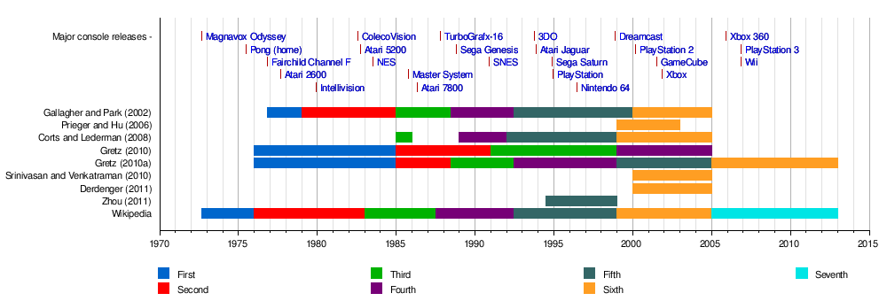

Evolução da IA nos Videogames
Uma jornada através das gerações de consoles e o avanço da inteligência artificial
Linha do Tempo da IA
1ª Geração (1972-1978)
O Início da Reatividade
Marcada por consoles como o Magnavox Odyssey e o Atari Pong, a IA era rudimentar. Os "inimigos" eram controlados por algoritmos simples e pré-definidos, baseados em regras fixas e reações diretas aos movimentos do jogador. A IA em Pong apenas movia a raquete do adversário para interceptar a bola, sem qualquer capacidade de aprendizado.
2ª Geração (1976-1984)
Padrões e Comportamentos Repetitivos
Com o Atari 2600, a IA começou a apresentar padrões de movimento mais elaborados. Jogos como Pac-Man utilizavam Máquinas de Estado Finitas (FSMs) para controlar os fantasmas, cada um com um padrão de perseguição e dispersão distinto. Embora ainda previsíveis, esses comportamentos adicionavam personalidade aos NPCs.
3ª Geração (1983-1990)
A Era do NES e a Ilusão de Inteligência
O Nintendo Entertainment System (NES) trouxe NPCs que pareciam mais inteligentes, mesmo que ainda baseados em regras. A IA criava inimigos com rotas de patrulha, ataques coordenados e reações a eventos específicos. Jogos de RPG começaram a usar IA para controlar o comportamento de monstros e chefes.
4ª Geração (1987-1996)
16-bits e Comportamentos Mais Complexos
Com o Super Nintendo e Sega Genesis, a capacidade de processamento permitiu IAs mais sofisticadas. Inimigos podiam ter múltiplos estados e transições mais fluidas, reagindo de forma mais convincente ao jogador. Jogos de luta apresentavam oponentes com diferentes estilos de combate e sequências de golpes.
5ª Geração (1993-1999)
A Revolução 3D e a Busca por Realismo
A chegada do PlayStation e Nintendo 64 marcou a transição para os gráficos 3D, e a IA também buscou maior realismo. NPCs começaram a ter comportamentos mais complexos em ambientes tridimensionais, como navegação em labirintos e uso de cobertura. Jogos de FPS se beneficiaram de IAs que podiam flanquear o jogador.
6ª Geração (1998-2005)
PS2, Xbox e a IA Comportamental
Com o PlayStation 2, Xbox e GameCube, a IA se tornou mais comportamental. NPCs podiam ter emoções simuladas, reagir a danos de forma mais realista e interagir uns com os outros. Jogos de stealth utilizavam IAs com diferentes níveis de percepção (visão, audição), forçando estratégias mais elaboradas.
7ª Geração (2005-2012)
Xbox 360, PS3 e a IA Preditiva
Esta geração viu a IA se tornar mais preditiva. Inimigos podiam antecipar os movimentos do jogador, adaptar suas estratégias em tempo real e aprender com erros passados. A IA em jogos de esporte tornou-se muito mais desafiadora, com oponentes que se ajustavam às táticas do jogador.
8ª Geração (2012-2020)
PS4, Xbox One e a IA Adaptativa
A IA atingiu um novo patamar com sistemas adaptativos e emergentes, como o Sistema Nemesis de Shadow of Mordor. A IA não apenas reage ao jogador, mas também cria narrativas dinâmicas onde os inimigos se lembram de encontros anteriores e evoluem com base nas ações do jogador.
9ª Geração (2020-Presente)
PS5, Xbox Series X/S e o Futuro da IA
Os consoles atuais continuam a impulsionar os limites da IA. Com maior poder de processamento, a IA pode controlar mais NPCs com comportamentos ainda mais complexos. A tendência é para IAs que geram conteúdo proceduralmente, criam mundos dinâmicos e oferecem experiências personalizadas usando aprendizado de máquina.
Sistemas Adaptativos Modernos
O Sistema Nemesis
O Sistema Nemesis, introduzido em Middle-Earth: Shadow of Mordor (2014), é um exemplo notável de IA adaptativa que cria uma experiência única para cada jogador. Os orcs são gerados proceduralmente e desenvolvem traços de personalidade e hierarquia com base nas interações do jogador.
- Inimigos Persistentes: Orcs que derrotam o jogador são promovidos e se lembram do encontro
- Geração de Narrativa: Cada jogador tem uma experiência diferente com seus próprios rivais
- Adaptação ao Jogador: Inimigos aprendem com o estilo de jogo e exploram fraquezas
- Hierarquia Dinâmica: Orcs sobem e descem na hierarquia baseado em vitórias e derrotas
Teste Seus Conhecimentos
Agora que você conhece a evolução da IA nos jogos, que tal testar seus conhecimentos com nosso quiz interativo?